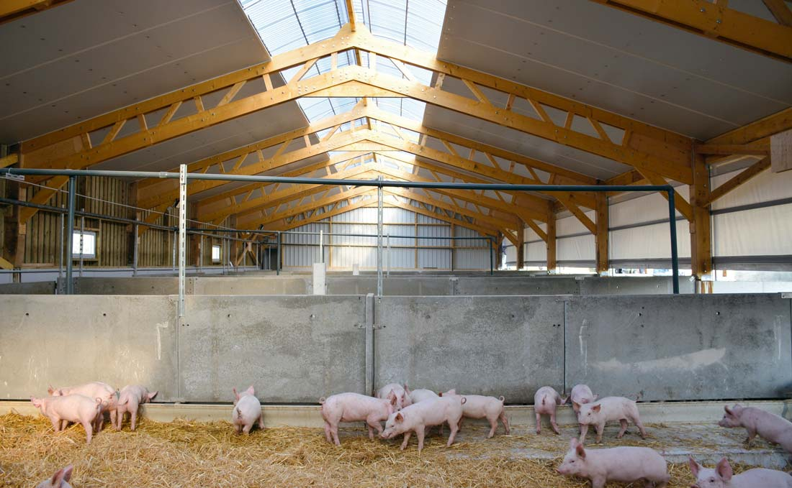

Description
Bienvenue dans notre porcherie, un endroit de la ferme ou nous elevons des porcs et des truis. prenez le temps de nous visiter sans plus tarder car vous ne regreterez pas de l'avoir faire. Nous elevons une race de porcs un peu rare, et nous les nourrisons regulierement comme il le faut, ce qui garanti leur croissance.